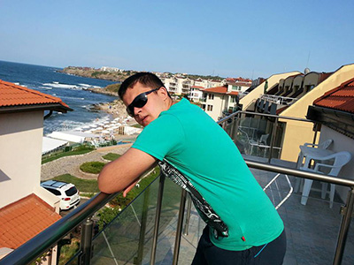

|

|
- Име:
- Алейдин Смаил Караимин
- Дата на Раждане:
- 31.07.1996
|
|
Образование
|
- училище: ПМГ ,,Никола Обрешков" гр.Казанлък
- профил на обучение: Информатика с Английски език
- випуск: 2014/2015
|
|
Езикови компетенции
|
Английски Език
- ниво на разбиране: Добро
- ниво на писане: Добро
- ниво на четене: Добро
- ниво на говорене: Добро
Руски Език
- ниво на разбиране: Средно
- ниво на писане: Средно
- ниво на четене: Добро
- ниво на говорене: Средно
|